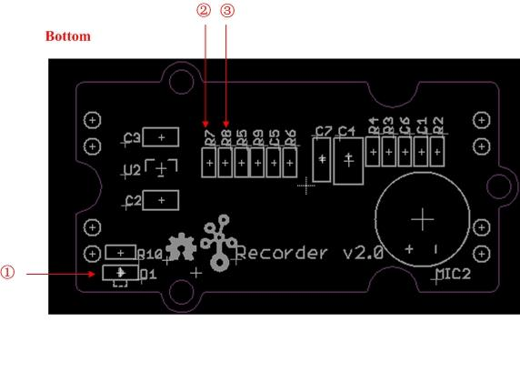
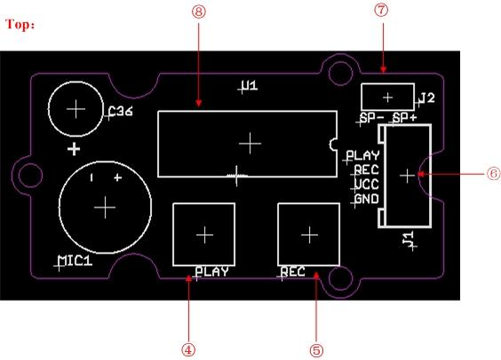
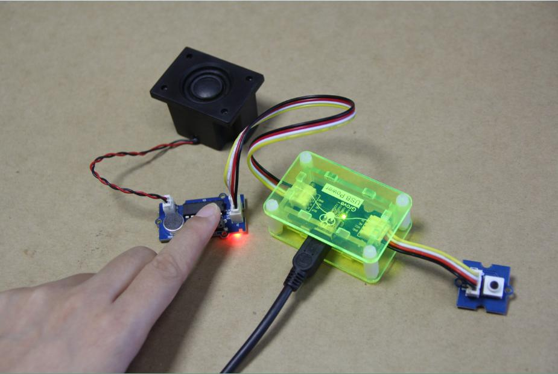
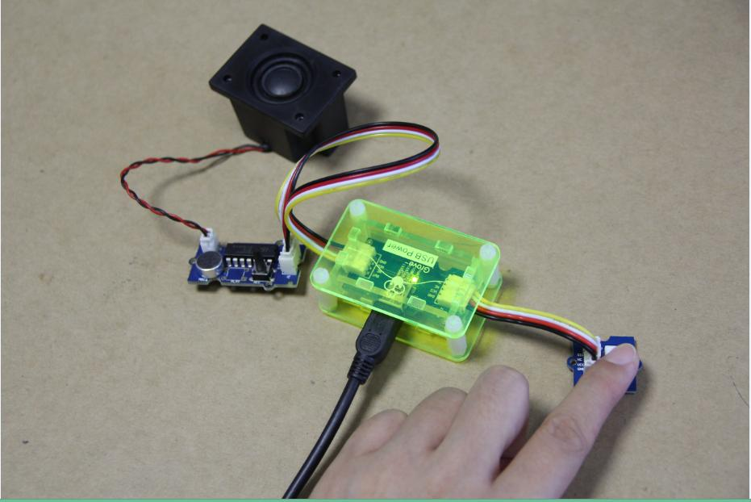

Grove - Recorder
Grove - Recorder is based on the ISD1820P chip, and can record 8-20 secs of audio. It offers true single-chip voice recording and provides non-volatile storage. The recording time can be varied by changing the sampling resistor (R6) on the module's PCB. By default, the resistor on-board has a value of 100KΩ and thus the module offers a default recording time of 10 secs. The audio recording can be directly controlled by the on-board push button or by a micro-controller such as a Seeeduino.
Features
- Low power consumption
- Non-volatile storage
- User-friendly operation
- Replace a single resistor to change recording duration and sampling frequency
- Add a resistor to set play cycle mode
- Ships with and connects to an 8Ω/2W mini-speaker (as shown in the picture)
- Uses Standard 4-pin Grove Cables to connect to other Grove modules or a micro-controller such as the Seeeduino.
Interface Function
 
- ① LED Indicator
- Modes:
- Record: Red LED light stays ON from the beginning of the recording duration until the end.
- Playback: Red LED flashes to signal end of audio playback.
- ② Sampling resistor
- You can set the recording duration and sampling rate by change sampling resistor (R6) based on the following table:
| ROSC
|
Duration
|
Sampling Frequency
|
Input Bandwidth
|
| 80 KΩ
|
8 secs
|
8.0 KHz
|
3.4 KHz
|
| 100 KΩ (default)
|
10 secs
|
6.4 KHz
|
2.6 KHz
|
| 120 KΩ
|
12 secs
|
5.3 KHz
|
2.3 KHz
|
| 160 KΩ
|
16 secs
|
4.0 KHz
|
1.7 KHz
|
| 200 KΩ
|
20 secs
|
3.2 KHz
|
1.3 KHz
|
- ③ Playback resistor
- Modes:
- Cycle: R8 is place 0Ω resistor
- Single: R8 is not place resistor
- ④ Play Key
- Not used currently
- ⑤ REC Key
- ⑥ Grove Interface
- ⑦ Loudspeaker Interface
- ⑧ REC IC：ISD1820P
Usage
Follow these steps to build a sample circuit using the Grove - Recorder module:
- Connect the recorder module to the output side of the Grove circuit (to the right of the power module). On the input side of the circuit, you may use a Grove - Button or a Grove - Slide Potentiometer module.
- Power up the circuit.
- Press and hold down the REC button on the recorder module and start recording the audio. The on-board red LED will turn ON. Continue to record the audio until the red LED gets turned OFF. The LED getting turned OFF is indicative of the fact that the recording time is now over.
- To play back the audio segment that has been recorded, press and hold down the Grove - Button. You should now hear the audio segment you recorded being played back. Continue to press and hold down the Grove - Button until you see the red LED on-board the recorder module flash. The flash indicates that playback of audio is now complete. If instead of a Grove - Button, you are using a Grove - Slide Potentiometer, simply move the slider from GND to VCC position to hear the playback at any time.
- To override the recorded audio, simply repeat step 3 above. The new message will override the old one.
Below is an illustration of a Grove circuit built using the Grove - USB Power power module:


If you do not have the Grove - USB Power module, use the Grove - DC Jack Power module instead.
Availability
This Grove module is available as part of the following Grove Kit Series:
Alternatively, it can be bought stand-alone at the Seeed Studio Bazaar.
Resources
Copyright (c) 2008-2016 Seeed Development Limited (
www.seeedstudio.com /
www.seeed.cc)
This static html page was created from http://www.seeedstudio.com/wiki